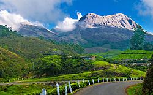

Munnar is a town and hill station in the Idukki district of
the southwestern Indian state of Kerala. Munnar is situated at around 1,600 metres
(5,200 ft) above mean sea level,[3] in the Western Ghats mountain range. Munnar
is also called the "Kashmir of South India" and is a popular honeymoon destination.
The name Munnar is believed to mean "three rivers",[4] referring to its location
at the confluence of the Mudhirapuzha, Nallathanni and Kundali rivers.[5]
Munnar Tea Hills
The region has been inhabited by hunter-gatherer tribals like the Malayarayan and Muthuvan
for thousands of years.[6] Tradition states that Colonel Arthur Wellesley, later the Duke of
Wellington, was the first British person to pass through Munnar during Tippu Sultan's
campaign in Travancore, but this is unsubstantiated. The first survey of the terrain
was undertaken by Benjamin Swayne Ward in 1816–1817, who followed the Periyar into
the Western Ghats and established a camp at the confluence of three rivers, from
which the name of Munnar is derived.[7]
It was to be nearly 50 years later that Sir Charles Trevelyan, Governor of Madras,
instructed Col. Douglas Hamilton to explore the hill country in the western part of the
Madras Presidency, requesting special advice on the feasibility of establishing sanatoria
for the British in the South and of developing revenue- earning projects without endangering
the environment, as had happened in Ceylon where coffee had destroyed not only the rain forest
but also paddy cultivation in the north-central rice bowl of ancient Ceylon. Hamilton
climbed throughout the Ghats in Munnar region. 15 years later, John Daniel Munro noted
that much of Munnar's land was suitable for coffee plantations. Munro, Henry Turn and
his half-brother AW Turner obtained ownership of the Cardamom Hills from the Raja of
Travancore and began clearing forest around Devikulam in 1879. Soon many other
Europeans began establishing tea plantations in the area throughout the 1880s.
Early plantations had few facilities and were mainly huts of straw. Most labourers
on the tea estates were Dalits from present-day Tamil Nadu.
